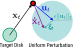
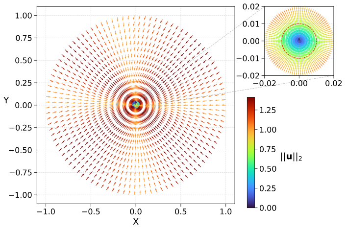
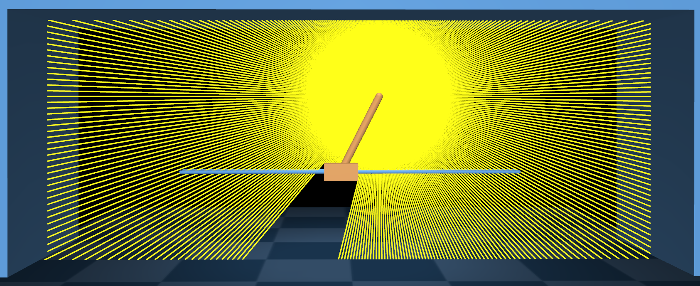
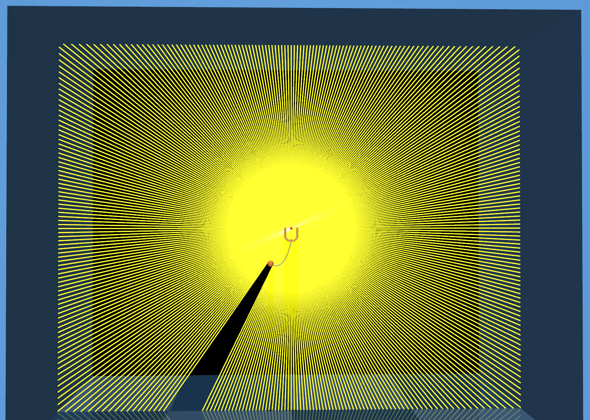
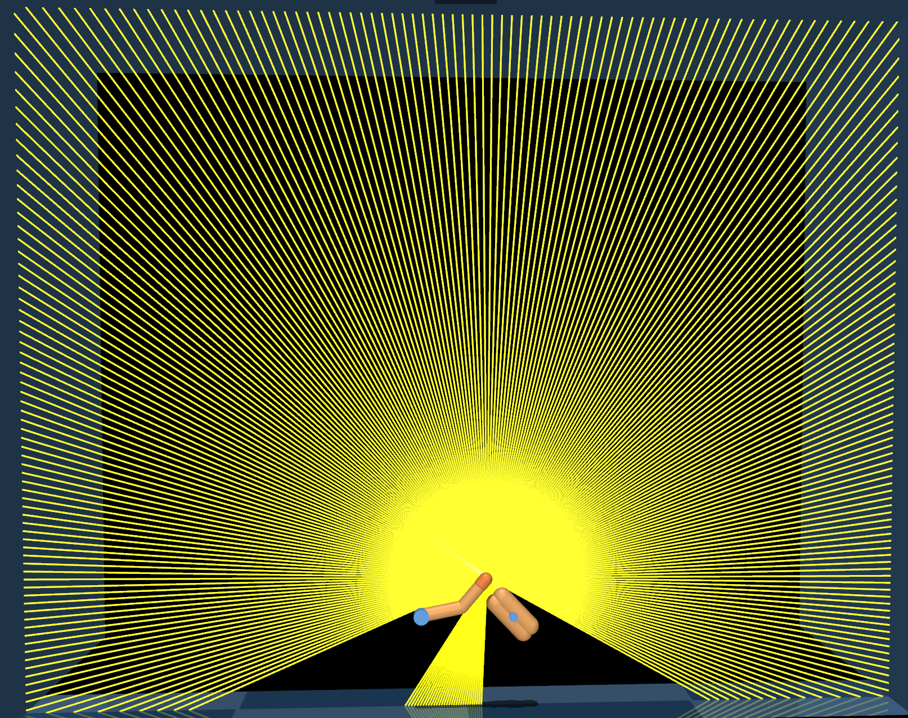

Tasks
This section provides a overview of the tasks evaluated in the paper.
point-to-disk
A velocity-controlled point-mass with state \(\rvx\) (cartesian position) must be driven into a target disk of radius \(r^* = 0.01\) m at the origin and held there. Given a velocity command \(\rvu\), the system evolves as \(\dot{\rvx} = \rvv\) with \(\rvv \sim B_\epsilon(\rvu) := \{ \rvv : ||\rvv - \rvu||_2 \leq \eps ||\rvu||_2 \}\) (\(\eps = 0.25\) in our experiments). The actuation noise grows with the commanded speed, so slowing down (\(\rvu \to \mathbf{0}\)) allows the controller to suppress actuation noise. The controller, operating at 50 Hz, is scored by its dwell time inside the target for rollouts of length \(H = 500\) steps (10 s) from states on the unit circle: \[\rmJ(\pi) = \E_{\pi,\,\{\rvx_0 : ||\rvx_0||_2 = 1\}}\left[ \sum_{t=0}^H \Ind{||\rvx_t||_2 < r^*} \right]\]

Fixing a coordinate system XY, the robot can move at most 1 m/s in either direction, so the action space is \(\gA = [-1, 1]^2\). Figure 1 illustrates a quiver plot of an oracle policy that has access to the perfect state \(\rvx\). The policy commands the maximum possible velocity towards the target when outside the disk, and starts slowing down to zero as it enters the target disk. The oracle policy achieves a performance of \(\rmJ_\text{oracle} = 456.23 \pm 4.59\) (\(N=1000\)).

point-to-disk task.
Sensors The designer can equip the various controller modes with the following sensor types. Each sensor reveals a different slice of the robot’s position \(\rvx\), as illustrated in Figure 2.
Cartesian(GPS): noisy position \(\rvx + \gN(0, \sigma_\text{xy}^2 \mI_2)\), with \(\sigma_\text{xy} \in \{0,\,10^{-2},\,5{\cdot}10^{-2},\,10^{-1},\,5{\cdot}10^{-1}\}\).Radial&Sector(RadialSector): a discretized polar reading returning the active sector among \(s \in [1,360]\) equiangular sectors (optionally offset by \(\phi\) radians) and the active radial band among \(\text{len}(\rvd){+}1\) bands defined by increasing distance thresholds \(\rvd = (d_1, \dots) \le 1\).- The per-step output is a concatenation of the one-hot over radial bands (empty when \(\rvd = ()\)) and unit-vector \((\cos\theta_s,\sin\theta_s)\) corresponding to centroid of the active sector.
- There is some Gaussian noise in measuring the polar coordinates of the robot \((r, \theta)\).
- The noise scales are tunable with \(\sigma_\theta \in \{0,\,10^{-1},\,2{\cdot}10^{-1},\,4{\cdot}10^{-1},\,8{\cdot}10^{-1}\}\) and \(\sigma_r \in \{0,\,10^{-2},\,5{\cdot}10^{-2},\,10^{-1}\}\).
Mode Transition Observation The mode transitions are based on the robot’s position vector \(\rvx\), which corresponds to the Markov state in this task.
The designer’s goal is to meet a performance target \(\rmJ_\text{target}\) while minimizing the sensing cost incurred.
point-to-disk task. Configure the parameters of RadialSector (left) and GPS (right) and click inside the unit circle (dashed line) to probe the robot’s instantaneous observation. The visualization depicts the costs of the configurations under the cost-structures CheapGPS and CostlyGPS on the top. The cost difference between the RadialSector (left) and GPS (right) configurations is depicted in the center, with a RED background indicating a cheaper RadialSector configuration.
RF-DMC
We construct rangefinder variants of three dm_control tasks — cartpole-swingup, cup-catch, and finger-spin. In each, the agent observes the world through a RayScanSensor consisting of 360 equiangular rangefinders, spanning \(360^\circ\), rigidly attached to a task-relevant body site (pole tip, cup center, fingertip). This rangefinders report the distance to the nearest surface as visualized in Figure 3. The rollouts and performance of the oracle policies on these tasks are visualized in Figure 4.

cartpole-swingup

cup-catch

finger-spin
cartpole-swingup
cup-catch
finger-spin
\(\rmJ_\text{oracle} = 881.8 \pm 4.9\)
\(\rmJ_\text{oracle} = 977.8 \pm 15.7\)
\(\rmJ_\text{oracle} = 969.9 \pm 11.7\)
RF-DMC tasks. The performance is reported over 1000 rollouts.
Rangefinder noise model We adopt the popular mixture-of-noise model (Probabilistic Robotics, Thrun et al.) to corrupt true range measurements \(z^*\), in the range \([z_\text{min}, z_\text{max}] = [0, 10]\) m, with the following noise components:
- hit — measurement noise, \(\gN(z^*, \sigma_\text{hit}^2)\), truncated gaussian located at the true range, clipped to \([z_\text{min}, z_\text{max}]\) (weight \(c_\text{hit}\))
- short — interfering obstacles, \(\propto \text{Exp}(\lambda_\text{short})\) on \([0, z^*]\) (weight \(c_\text{short}\), held at \(0\) across grades in our experiments)
- max — missed detections, \(\delta\)-spike at \(z_\text{max}\) (weight \(c_\text{max}\))
- rand — random noise, uniform over the measured range \([z_\text{min}, z_\text{max}]\) (weight \(c_\text{rand}\)).
The designer tunes discrete sensor quality levels \(\in \{\texttt{A}, \dots, \texttt{F}\}\) that set operating specific mixture weights and measurement noise scales \(\sigma_\text{hit}\). The per-step sensor cost is \(\big(\text{energy}(\texttt{quality}) + \tfrac12 \log_2 H\big)\cdot n_\text{rays}\), where the per-ray grade energy is obtained from the SNR for the chosen rangefinder noise model, \(H\) is the observation history length, and \(360 / n_\text{rays}\) is the angular resolution. Figure 5 presents an interactive visualization of the noise model and sensor costs for the RF-DMC sensor configurations.
quality (A–F) and true range \(z^*\); the panel below reports the grade’s mixture weights and measurement statistics. Center: visualizes the density \(p(z \mid z^*)\). Right: reports the per-step sensor cost of the configuration.